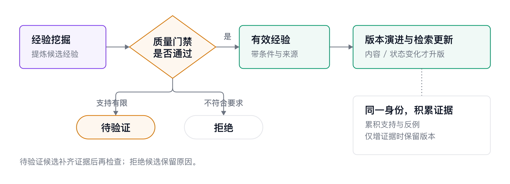
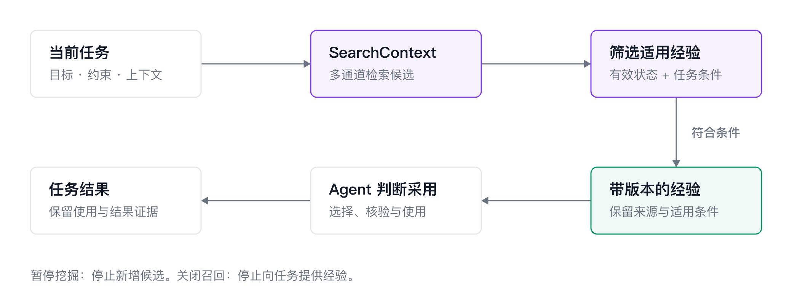
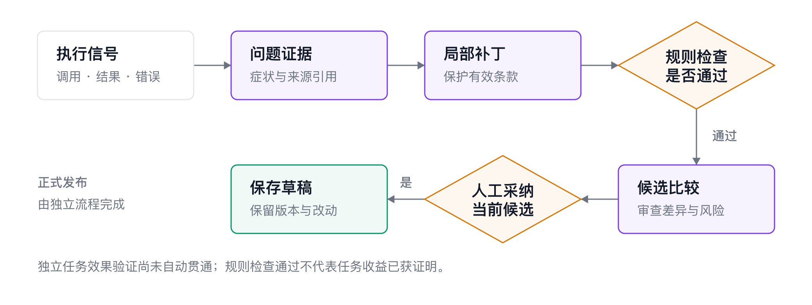
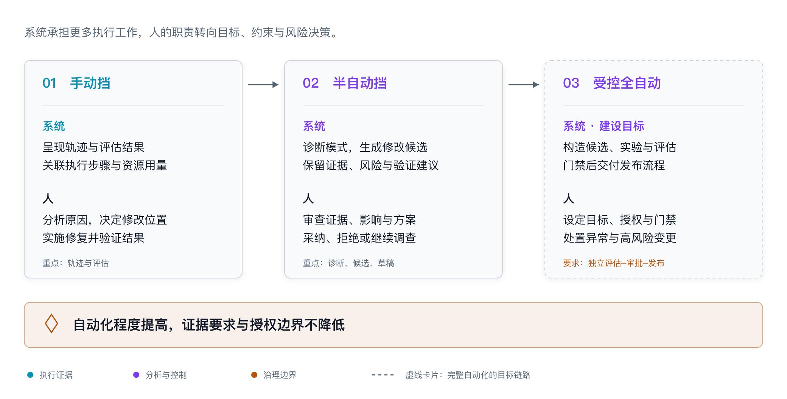
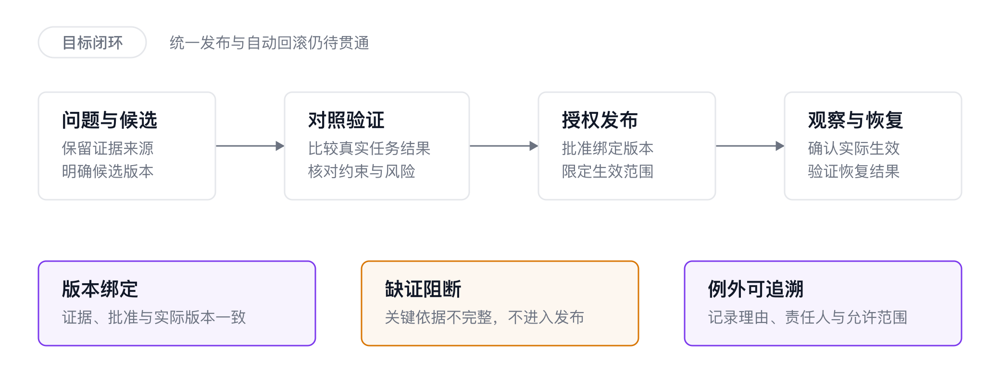

第 23 章 受控自进化¶
一个排障 Agent 已经成功解决过某类问题，下次遇到相似故障时，仍可能重新查资料、尝试错误参数，甚至遗漏上次确认过的关键步骤。一个代码 Agent 能完成大部分修改，却总在某类任务中漏掉测试。业务团队关心的是：怎样让已经走通的方法被稳定采用，让反复出现的问题逐渐减少，同时控制每次任务的时间和成本？
上一章帮助团队发现问题、比较改动。下面从实际使用开始：创建并接入经验库，把已验证的方法整理成可调用的资产，再用失败样本改进 Skill 和运行机制。
23.1 先选一类值得反复做好的任务¶
第一轮调优适合选择目标明确、重复出现、能检查结果的业务。业务负责人先说明什么算完成，Agent 维护者再从 Trace 中找出几条成功任务和几条失败任务，对照它们怎样执行。
选择方向时，先检查 Agent 是缺方法、重复生成相同代码，还是被工具或运行环境阻碍。
| 业务现象 | 先尝试什么 | 希望得到的变化 |
|---|---|---|
| 相似故障总要重新探索，方法只在特定条件下适用 | 建经验库，在任务开始或遇到相关问题时召回 | 更快找到有效路径，减少无效尝试 |
| 经常漏掉前置检查、测试或结果确认 | 补充或修改 Skill | 同类任务更稳定地完成必要步骤 |
| 反复编写相近的统计查询、分页或清洗脚本 | 整理 SQL 模板、Script 或工具 | 减少重复生成与调试，统一业务口径 |
| 固定流程总要人工盯着推进 | 将稳定步骤接入 Workflow | 让前置检查、执行和验收按约定推进 |
| 重复提交、恢复后状态不明、长任务忘记约束 | 修改 Harness，即 Agent 的执行与上下文管理机制 | 减少业务重复操作和运行中断带来的错误 |
例如，排障 Agent 查询范围过大，可以先在 Skill 中补充“按故障时间和对象缩小范围”；如果查询工具不支持过滤，就由工具维护者补能力。
23.2 建好经验库，让团队能检查挖掘出了什么¶
经验库适合保存“遇到什么情况，可以怎样处理”。它帮助不同任务复用方法，也让维护者能够从来源判断方法是否可靠。日志排障中的“先找首次异常，再分析连续重试”，比某次故障的最终答案更有复用价值。
先确认有可用轨迹。 在 Agent 观测与优化中选定 AgentSpace 和应用，打开一条真实任务，检查用户目标、关键工具调用与结果是否可见。如果只有最终回答，先补齐接入；经验需要知道方法怎样执行、依据什么得到结果。
再创建经验库并选择来源。 在经验库入口填写名称、说明，选择应用和挖掘起始时间。第一次可以围绕一类相近任务选取近期数据，让任务方法和工具条件比较一致。时间范围需要覆盖成功、失败以及失败后恢复的过程；不必为了增加条数，把规则已经过时的历史全部纳入。当前来源按所在 AgentSpace 组织，应用与起始时间在创建时确定，提交前应核对清楚。
创建后查看挖掘进展，再打开代表经验。 可以先选几条与高频业务最相关的内容，检查三件事：它解决什么问题，建议采取什么动作，什么条件下适用。随后回到来源 Trace，确认动作是否真的出现，结果是否支持这项建议。
例如，某条经验建议“查询不到日志时扩大时间窗口”。排障人员应进一步判断：当时是窗口太短，还是数据根本没有采集？前一种情况可以复用查询方法，后一种情况应先处理接入。经验的来源和不适用条件，能帮助团队避免把一次现场处置变成所有任务的固定要求。
这一阶段由熟悉业务的人抽查内容，Agent 维护者核对工具条件和接入范围。若结果只有“仔细分析、正确调用工具”等泛化要求，先补充代表性轨迹与问题信息；若应用或时间范围选错，按正确范围创建试用库。

图：经验随任务反馈修订；使用者重点检查内容、适用范围和来源，决定哪些方法进入试用。
23.3 把经验接入 Agent，并亲自验证一次召回¶
经验库建好以后，需要让目标 Agent 在执行时读取它。Agent 观测与优化的经验召回页面提供安装、配置和验证指引。以支持 Skill 的研发或排障 Agent 为例，维护者可以按下面的路径完成接入。
-
安装召回 Skill。 在目标 Agent 的项目中，使用页面给出的安装命令安装
alibabacloud-agentloop-experience，确认 Agent 能发现该 Skill。这里安装的是访问经验库的能力，具体经验会在运行时查询。 -
配置当前经验库。 从该库的召回页面取得地址，配置 API Key 和召回开关。使用项目配置文件时，核对 Agent 实际工作目录及生效配置，避免连接到另一项目的经验库。
-
允许必要调用。 按目标 Agent 的方式启用 Skill 及其所需工具权限。操作演示使用的 Agent 还需要 Skill 白名单和会话 Shell 权限；其他运行环境按自己的接入方式配置。
-
执行一次真实查询。 选一条已经检查过的经验，用相关业务问题测试，并查看返回的内容与来源。成功返回后，再让 Agent 执行完整任务，观察它在哪一步使用了经验。
例如，经验库中已有“日志只包含重试时，向前寻找首次异常”的方法，可以向排障 Agent 描述当前故障、时间范围和已经看到的重试现象，并要求先检查是否有相关经验。验收时查看实际调用记录、召回结果，以及后续是否有针对性地寻找前置异常。Agent 口头说“参考了历史经验”，还需要对应真实调用和执行动作。

图：目标 Agent 通过召回能力取得相关经验，再结合当前任务判断是否采用。
接入遇到问题时，可按现象定位：没有发起查询，检查 Skill 是否启用、触发说明和工具权限；查询失败，检查地址、空间、库名和凭证；查询成功但为空，先确认库中有相关内容、查询表达和过滤范围合适；命中了经验却没有采用，检查返回内容是否进入上下文、前提是否适用。把这些情况分开，能避免反复调整阈值却没有解决接入问题。
一次真实任务查到了相关经验，并能看出它怎样影响行动后，就可以进入效果比较。
23.4 用实验决定召回多少、什么时候用¶
经验可能缩短探索，也会增加检索和阅读开销。对短任务来说，多查一次经验未必划算；对复杂排障来说，一条相关方法可能节省多轮试错。因此，召回策略需要根据业务实验选择。
先保留一组不使用经验的运行作为 Baseline，再用相同模型、工具和任务测试候选策略。操作演示采用更换 Session ID、重新发起同一请求的方式观察差别。正式比较时也应使用新会话，并重置任务依赖的状态，避免上一轮已经留下的答案、文件或操作结果让下一轮变容易。
第一轮可以从少量、明确相关的经验开始，再逐项调整：
| 可调整的因素 | 如何试用 | 如何判断是否合适 |
|---|---|---|
| 召回阈值 | 比较更严格和更宽松的相关性要求 | 是否减少无关内容，是否漏掉本该有帮助的方法 |
| 返回数量 | 比较一条与少量多条经验 | 额外内容是否补充有效条件，还是增加阅读负担 |
| 触发时机 | 比较任务规划前查询、遇到相关失败后查询 | 是否在决策前提供帮助，是否出现每轮重复查询 |
| 放置位置与长度 | 调整当前任务、使用说明、经验的组织顺序；精简冗余描述 | 是否保留关键前提，Agent 是否正确理解并采用 |
| 使用要求 | 明确经验是历史参考，采用前检查当前条件 | 条件不符时能否放弃历史做法，继续调查 |
维护者在召回配置或 Agent 接入代码中调整这些因素。页面或演示里的参数用于开始测试，最终以本业务实验为准。
验收也要回到业务。排障任务看根因是否正确、证据是否完整、无效查询是否减少；代码任务看修改是否满足需求、测试是否有效；报告任务看数字和口径是否正确。再比较完整任务的耗时、Token、工具调用和费用，把召回开销也计入。运行有波动时重复测试，同时保留不需要经验的任务，检查是否增加无谓操作。决定采用前，再用未参与本轮挖掘的同类任务检查效果。
如果某条经验让 Agent 反复扩大范围、照搬历史参数，先缩小它的使用范围或在接入侧停止采用，保留出问题的任务作为反例。下一轮修改内容或召回策略后，再用同样任务验证。这样，团队调整的是具体使用方法，而不是笼统地判断“经验有没有用”。
23.5 把稳定方法变成 Skill、SQL、Script 与 Workflow¶
当一种做法已经足够稳定，团队可以把它直接整理成可使用的资产。经验便于按场景补充参考；Skill 适合表达任务方法；SQL 和 Script 适合承担重复计算；Workflow 适合推进固定步骤。它们可以组合使用。
以定期统计 Agent 失败率为例，业务人员先确认“任务”和“失败”的口径，维护者从已核对的成功轨迹中取出查询和检查过程，逐步整理成以下产物：
-
SQL 模板保留去重、计数和分组逻辑，把应用、时间范围等现场值改成参数；附上字段含义、时区、空结果解释和明细核对方式。下一次统计时，Agent 选择模板并填写参数。
-
Script 或工具封装分页读取、结果解析、去重和汇总等重复工作，接收短参数并返回结构化结果。维护者补齐依赖、错误提示和调用示例，Agent 就能复用经过检查的实现。
-
Skill说明何时使用这套统计方法、先确认什么口径、怎样选择模板、出现字段变化时如何处理，以及完成后怎样核对报告。
-
Workflow把“确认范围—执行统计—核对明细—生成报告”接成固定步骤，为空数据、查询失败和口径不匹配安排明确处理方式。
开始时不必一次交齐四种资产。若最大开销来自重复生成查询，先交付 SQL 模板；若问题是经常漏验收，先修 Skill；只有步骤和异常分支已稳定时，再接入 Workflow。团队可以让 Agent 根据轨迹起草这些内容，由熟悉业务和工具的人检查后放入项目仓库或现有资产管理系统。
采用前，换一组时间和应用参数执行，检查结果是否仍正确；加入空数据、重复记录和字段变化的样本，确认异常能够被发现。随后从一个新任务发起完整请求，检查 Agent 能否找到资产、选择合适入口并正确调用。文件已经生成，还要完成这一步使用验证。
这类调优让稳定部分少依赖临场生成，并把口径和验收方法分享给整个团队。资产的执行和发布，接入现有的开发与交付方式即可。
23.6 用失败样本推动 Skill 甚至 Harness 工程的改进¶
面对已确认的 Badcase，先写清楚“应该在哪一步采取什么行动”。Skill 维护者可以把原 Skill、实际失败轨迹、相邻成功任务和预期行为交给优化助手，生成局部修改建议。SkillForge 提供了依据轨迹诊断、生成补丁和候选的能力；使用者重点检查改动是否解决问题、是否保留原有有效方法，再把候选交给实验。
一个标准演示案例中，表格 Agent 向不存在的工作表写入，失败后才查询工作表列表，改用实际目标；另一次写入因为公式括号不完整而失败。由此可以提出三个具体修改：写入前确认目标工作表、提交前检查公式、完成后回读目标单元格。审查时能逐项对应执行证据，不需要把整份 Skill 重写成更长的通用注意事项。

图：将失败与成功轨迹交给优化助手，得到可比较的 Skill 修改建议；维护者选择候选并组织任务验证。
代码团队也可以采用同样方法。若 Agent 经常改完代码就结束，先看它是否加载了对应 Skill，测试命令是否存在，测试环境是否可用。方法缺失时补上“执行相关测试并检查结果”；环境缺失时安排环境修复。新 Skill 用目标 Badcase、原本成功的任务和不应触发该 Skill 的任务一起检验，确认修复没有变成所有任务的额外负担。
有些问题则要由运行环境维护者处理。以“提交已经发生，但会话恢复后再次提交”为例，业务人员提供重复操作记录，Agent 开发者对照 Trace 找到中断位置，运行环境维护者修改恢复行为：区分尚未开始、已经开始但结果未知、已经完成；结果未知时先核对业务状态，再决定后续动作。这属于 Harness 改进，交付的是执行代码或配置。
这类改动需要有针对性的验收。在可控环境中分别模拟提交前中断、提交后结果尚未保存等情况，检查恢复后是否重复操作、最终业务状态是否正确。对长任务遗忘约束的问题，则选择真正会触发上下文压缩的任务，检查压缩后目标、关键限制和未完成事项是否仍被遵守。验证任务应触发原来的问题，才有理由采用修改。
23.7 从人工选择候选，到受控采用改进¶
团队可以按工作成熟度逐步增加自动化。业务目标与验收要求始终是起点，变化的是哪些重复工作交给系统完成。
| 工作方式 | 团队怎样开展 | 一轮结束时得到什么 |
|---|---|---|
| 手动调优 | 专家挑选问题、查看轨迹，维护者改一条 Skill、一份查询或一处运行配置 | 一项具体修改和对应任务的验证结果 |
| 半自动调优 | 系统整理失败模式、挖掘经验或生成候选；人比较方案、安排实验、决定采用 | 经审查的候选、实验差异和采用范围 |
| 受控自动调优 | 对已规定范围的变更，由接入流程自动运行检查和实验，满足条件后采用，异常时交给负责人 | 按规则采用的改进，以及可检查的运行反馈 |

图：自动化程度提高后，系统承担更多重复操作；业务目标、采用条件和异常处理仍需明确。
经验挖掘与运行时召回可以先接起来；Skill 候选生成可以先交给维护者审查。跨资产的自动实验、生产发布和恢复，则由团队把已有能力接入自己的运行与交付系统。适合先自动化的，是高频、范围清楚、结果容易检查的动作。
每次决定采用时，负责人确认四件事：目标问题是否改善，原有任务是否退化，额外代价是否可接受，目标 Agent 是否实际使用了被验证的内容。记录原版本、候选差异、实验结果和采用范围，保留出现异常时恢复原配置的办法。经验召回出了问题，需要调整召回或采用设置；仅暂停挖掘不会停止旧经验继续影响任务。

图：问题、修改、实验和实际采用相互关联，方便团队判断效果，并在出现退化时定位和恢复。
采用之后继续检查新任务，把有效方法留给下一次执行，把反例交回Dataset和评估实验。数据飞轮的价值，最终体现在任务更稳定地完成，以及团队能说明每一项改进为什么值得保留。